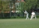
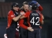

What is this?
The news archive contains a list of every single article published on The Yorker in chronological order.
Search
archive
Viewing 21 - 29 of 29 articles

Sport - Cricket
Sat, 23rd April 2011
James Tompkinson on the start of the university cricket season next term
Sport - Cricket
Mon, 4th April 2011
Steve Puddicombe reviews the Cricket World Cup Final 2011 and the competition as a whole
Sport - Cricket
Mon, 28th March 2011
James Tompkinson on England's exit from the 2011 Cricket World Cup

Sport - Cricket
Wed, 23rd March 2011
Steve Puddicome looks at England's passage through to the Cricket World Cup quarter-finals
Sport - Cricket
Sun, 6th March 2011
James Tompkinson on cricketer Steven Davies' decision to publicly announce that he is gay.
Sport - Cricket
Tue, 1st March 2011
Stephen Puddicombe looks at the opening week of the 2011 Cricket World Cup
Sport - Cricket
Sat, 12th February 2011
James Tompkinson on England's chances in the upcoming cricket World Cup
Sport - Cricket
Wed, 2nd February 2011
Steve Puddicombe looks at how England fared against Australia in their fourth and fifth ODIs
Sport - Cricket
Wed, 26th January 2011
James Tompkinson on England's ODI struggles down under
Viewing 21 - 29 of 29 articles